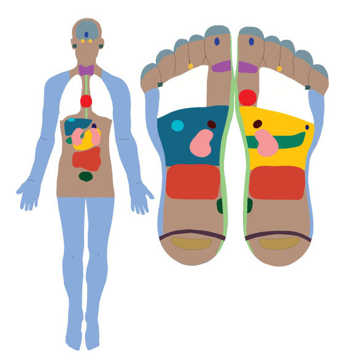
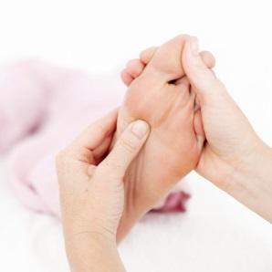
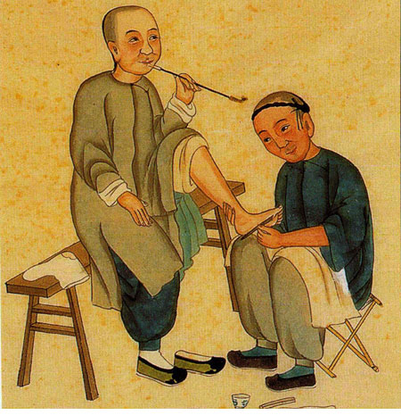
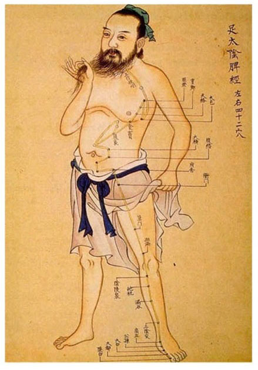
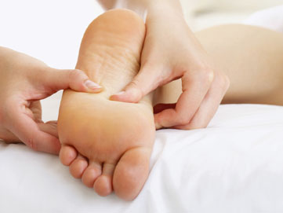
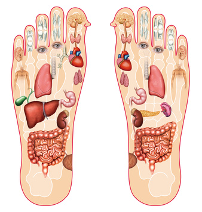
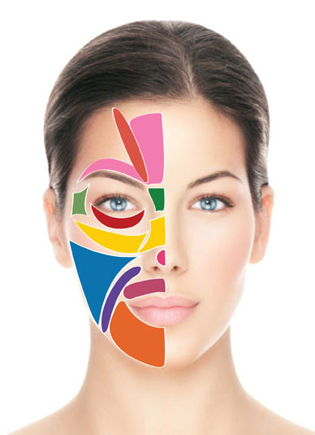
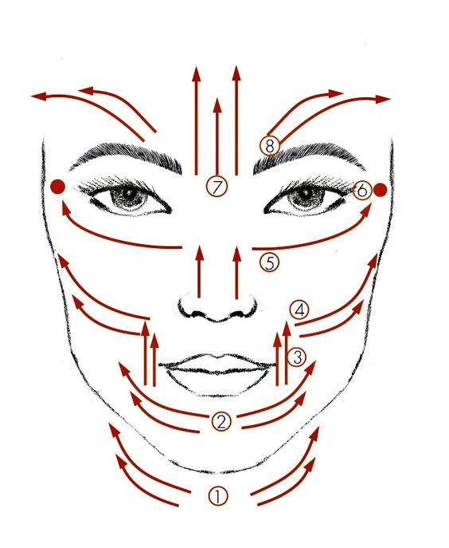

 Refleksoterapia jest jedną z najpopularniejszych we współczesnej medycynie naturalnej formą profilaktycznego i leczniczego oddziaływania na ludzki organizm.
Termin ten jest bardzo szeroki i obejmuje swoim zasięgiem wszystkie te metody terapeutyczne, u podstaw których leżą reakcje odruchowe w systemie nerwowym człowieka.
Słowo 'refleks' oznacza odruch, 'logos' - słowo, naukę, w związku
z tym refleksologia to nauka o odruchach (reakcjach odruchowych w organiźmie). Refleksologia jest fascynującą nauką według której wszystkie narządy ciała odpowiadają punktom odruchowym / refleksorycznym na stopach, głowie i twarzy. U jej podstaw
leżą badania fizjologiczne i neurologiczne. To sztuka, ponieważ skuteczność zabiegów zależy w głównej mierze od zręczności terapeuty i umiejętności wykorzystania posiadanej wiedzy.
 Masażu refleksologicznego nie można mylić z klasycznym masażem stóp i ciała, jest to bowiem specjalna forma uciskania precyzyjnie określonych punktów. W skutek zabiegu
dochodzi do wprowadzenia w głęboki stan relaksu, odprężenia i likwidacji napięcia, co oznacza poprawę krążenia płynów ustrojowych, lepszą dystrybucję składników odżywczych do komórek i wydajniejsze funkcjonowanie wszystkich narządów organizmu.
Wszystkie procesy lecznicze są dziełem samego organizmu. Refleksolog nie wyodrębnia choroby i nie leczy jej obiawowo. Nie skupia się na stwarzającym problem narządzie czy układzie, ale rozważa zaistniałą dolegliwość w kontekście całego organizmu.
W celu uzyskania najlepszych efektów terapii, wskazane jest odbycie pełnej serii zabiegowej, nawet w przypadku pojawienia się pierwszych symptomów poprawy zdrowia. Optymalna seria terapeutyczna liczy od 8 do 10 zabiegów. Zabiegi w żadnym
wypadku nie stanowią alternatywy dla współczesnej medycyny konwencjonalnej. Mogą być jednak uznane z całą pewnością za metodę wspomagającą pracę lekarza w przywracaniu człowieka do zdrowia, poprawiającą odporność organizmu, wykorzystując własny
system samoobrony, co zapobiega powstawaniu chorób.
 Początki refleksologii, sięgają kultur starożytnego Egiptu, Chin, Ameryki Północnej. Najstarszy dowód opisujący stosowanie refleksologii, odkryto w
Egipcie. Jest nim rysunek naścienny (relief), pochodzący z około 2500-2330r. p.n.e, znaleziony w Sakkarze, w grobowcu egipskiego lekarza Ankmahora.
Podwaliny pod rozwój współczesnej refleksologii stworzył m.in. dr Alfons Cornelius
w Niemczech. W roku 1893, rozpoczęły się pierwsze prace badawcze nad terapią uciskową, masażem nazwanym segmentarnym lub odruchowym. Mniej więcej w tym samym czasie w Vienna Hospital, dr Henry Bresler prowadził badania nad możliwościami leczenia
narządów wewnętrznych poprzez terapie uciskowe. W Londynie, w latach 90-tych, podstawowe naukowe badania odruchów neurologicznych rozpoczął Sir Henry Head, który odkrył na skórze pewne strefy szczególnie wrażliwe na ucisk, kiedy połączony z
nimi nerwami narząd był chory. W tym samym okresie na terenie Rosji badania nad reakcjami odruchowymi prowadzili m.in. Iwan Seczenow oraz Iwan Pawłow, twórca teorii odruchów warunkowych.
 Nurty badawcze zapoczątkowane przez wspomnianych naukowców czy lekarzy kontynuowało wielu Europejczyków, jednak to Amerykanom należy przypisać
zasługę nadania odpowiedniej rangi współczesnej refleksologii. Jednym z nich był Dr Wiliam Fitzgerald, powszechnie uznawany za twórcę terapii strefowej, który badał możliwość leczenia narządów za pomocą określonych punktów ucisku. Metode tę
wykorzystywał w swojej praktyce lekarskiej dr Joseph Shelby Riley. Jednak do rozwoju współczesnej refleksologii, dzięki niestrudzonym badaniom przyczyniła się jego studentka, Eunice Ingham. Nakreśliła na stopach przebieg stref i opisała ich
oddziaływanie na organizm, a w końcu sporządziła na samych tylko stopach mapę całego ciała. Napisała dwie książki o leczniczym masażu stóp: w 1938 roku - "Historie, które mogą opowiedzieć stopy" i w roku 1963 - "Historie opowiedziane przez stopy".
Jej praca odniosła taki sukces, ze autorkę uznaje się za matkę tej nauki.
W 1960r., refleksologia trafiła do Wielkiej Brytanii dzięki Doreen Bayly, studentce Eunice Ingham. W roku 1975 roku, w Niemczech, Hanne Marquardt otwarła jedną
z pierwszych szkół refleksologii. W 1983 roku Inge Dougans, duńska refleksoterapeutka, założyła w Johanesburgu Międzynarodową Akademię Refleksologii i Terapii Meridianowej. W Warszawie w 2002 roku powstał polski oddział Akademii. Placówka uznana
jest oficjalnie przez MEN i Mazowieckie Kuratorium Oświaty jako Ośrodek kształcący zawodowych refleksologów.
 Masaż stóp to lecznicza metoda, która polega na uciskaniu określonych stref na stopach. Stymulacja tych punktów uaktywnia proces samoleczenia organizmu.
Zastosowanie masażu stóp redukuje stres i napięcie psychofizyczne, powodując stan głębokiego odprężenia. Każda część ciała unerwiona jest bezpośrednio z określonego poziomu rdzenia kręgowego. Zwiększone napięcie prowadzi do skurczów
mięśni przykręgosłupowych. Pojawia się ból, gdyż jest to wynik zakończeń nerwów na ten skurcz. Kiedy napięcie ulega redukcji, mięśnie rozluźniają się i dzięki temu nasz układ nerwowy zaczyna pracować prawidłowo.
Kolosalne znaczenie
dla organizmu ma również prawidłowe krążenie krwi. Jeżeli dotarcie krwi do którejkolwiek części ciała zostaje zaburzone, człowiek zaczyna odczuwać różne bóle i dolegliwości. Tylko tkanki odpowiednio zaopatrzone w krew, tlen i substancje odżywcze
mogą funkcjonować bez zakłóceń, ponieważ naczynia krwionośne kurczą się i rozluźniają, ich elastyczność jest bardzo ważna dla prawidłowego funkcjonowania całego organizmu. Długotrwały stres i napięcie, doprowadzają do zwężenia naczyń, ograniczając
dopływ krwi do narządów. Krążenie staje się utrudnione, co powoduje wzrost lub spadek ciśnienia krwi. Masaż pozwala na swobodną cyrkulację krwi i optymalne zaopatrzenie w nią wszystkich tkanek.
 Masaż poprzez techniki stymulujące ma pozytywny wpływ na system wydzielania dokrewnego. Jeżeli gruczoły przestają prawidłowo pracować, ustaje wydzielanie hormonów
mających wpływ na nasze emocje, myśli a nawet kształtowanie osobowości. Organizm wtedy zostaje wytrącony ze stanu równowagi.
Masaż uruchamia mechanizm przeciwbólowego działania stymulując mózg do wytwarzania większej ilości enforfin,
naszych własnych "środków przeciwbólowych". Proces łagodzenia bólu polega też na tym, że bodźce uciskowe receptorów stóp, biegnące tzw. nerwami szybkoprzewodzącymi hamują przebieg bodźców bólowych z miejsc chorych, które docierają do rdzenia
kręgowego tzw. nerwami wolnoprzewodzącymi. Dodatkowo, jeśli ból narządu spowodowany jest niedokrwieniem, ustępuje po zabiegu, gdyż komórki otrzymują tlen.
W zakończeniach nerwowych w stopach, osadzają się toksyny oraz złogi wapnia,
które przekształcają się w kryształki kwasu, utrudniając prawidłowe krążenie krwi. Ponieważ owe kryształki znajdują się w tkance podskórnej stóp, dzięki masażowi można je "rozbić", a ich pozostałości zostaną usunięte przez krążącą krew. Przynosi
to obolałym stopom ulgę i lekkość.
Terapia poprawia jakość życia ludzi nieuleczalnie chorych. Nie jest często w stanie usunąć przyczyn chorób terminalnych (takich jak nowotwory), lecz sprawia, że chory będzie czuł się bardziej komfortowo,
a ból będzie łatwiejszy do zniesienia.
 Masaż głowy i twarzy, podobnie jak masaż stóp polega na uciskaniu odpowiednich punktów zwanych receptorami. To metoda terapii, według której strefy odruchowe
na głowie i twarzy odpowiadają wszystkim narządom i częścią ludzkiego ciała.
Refleksolog podczas terapii stymuluje tysiące zakończeń nerwowych, znajdujących się w tkankach pokrywających głowę i w ten sposób skutecznie oddziałuje
na znajdujący się w bliskim sąsiedztwie, ośrodkowy układ nerwowy. Dlatego pozytywne efekty terapeutyczne uzyskuje się szczególnie w dolegliwościach zlokalizowanych w okolicy twarzy i głowy, takich jak: przykurcze mięsni twarzy, porażenie nerwu
twarzowego, choroby oczu, nosa i uszu, szum uszny, osłabienie słuchu, zapalenie zatok, nerwobóle, tiki twarzy, obrzęk policzka, szczękościsk, łzawienie, zapalenie spojówek, zaburzenia mowy, bóle głowy.
 To naturalna forma łagodzenia niekorzystnego działanie stresu na organizm, wprowadzając go w stan głębokiej relaksacji co ma pozytywne działanie na: stany napięcia
nerwowego, pobudzenia nerwowego, ADHD, depresje, zaburzenia pamięci i koncentracji, bezsenność.
Masaż to także doskonały lifting twarzy. Znacznej poprawie ulegną wszystkie tkanki, począwszy od skóry, poprzez tkankę podskórną aż do
mięśni mimicznych i ich powięzi. Skóra staje się lepiej ukrwiona a przez to sprężysta i elastyczna z powodu większego napięcia włókien kolagenowych. Wygładzają się zmarszczki a twarz nabiera blasku. Znikają obrzęki i napięcia twarzy, co przynosi
uczucie rozluźnienia i lekkości.